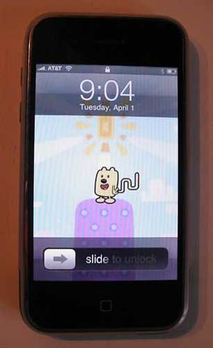

{kind=link}
Come On and Get Digital, Digital
 No, that's not some freaky, robot Wubbzy... well, OK, I guess in a way it is. It's the Digi-Wubbzy!
No, that's not some freaky, robot Wubbzy... well, OK, I guess in a way it is. It's the Digi-Wubbzy!The Digi-Wubbzy is another great fall toy you'll be able to get in August. How cool is this? It comes with 8 "kooky games and activities." Dress Up, Catching Flutterflies, Kickety-Kick Ball, Wacky Faces, Dance Party, Scooter Ride, Kooky Kowboy and Egg Catch.
I'm sure you can tell by the names, these games are too fun!
So keep those peepers peeled for this one. It'll be hard to miss on store shelves. - Carrie
Party On
 I know that everyone is super anxious for Wubbzy party supplies. I have my ear to the ground waiting to hear news. The good thing is - I have balloons! I know, you still have to do some work on cups and plates and banners... but balloons are a start :) This is another goody that you'll be able to find in stores in August. - Carrie
I know that everyone is super anxious for Wubbzy party supplies. I have my ear to the ground waiting to hear news. The good thing is - I have balloons! I know, you still have to do some work on cups and plates and banners... but balloons are a start :) This is another goody that you'll be able to find in stores in August. - Carrie
Spotted!
 Check out what I spotted at Target this weekend! This Wubbzy Memory game is an exclusive with them and available in their stores now (though I don't see it online). When can you get more? Well, keep a weather eye out! More toys and games are poised to roll out in the month of August. I got a bunch of samples in this week, so I'll be rolling some posts out with pictures of them all. Check in every so often for updates! - Carrie
Check out what I spotted at Target this weekend! This Wubbzy Memory game is an exclusive with them and available in their stores now (though I don't see it online). When can you get more? Well, keep a weather eye out! More toys and games are poised to roll out in the month of August. I got a bunch of samples in this week, so I'll be rolling some posts out with pictures of them all. Check in every so often for updates! - Carrie
Bob Boyle, Emmy Award Winner

Congratulations to Wow! Wow! Wubbzy! creator and executive producer Bob Boyle for winning his first Emmy in the category of Individual Achievement in Animation. Bob, pictured above with sk8rgurl Michelle Kwan, will be honored at the June 13th Emmy Awards ceremony. Congratulations, again, Bob. You deserve this one.
Wubbzy Phone Home

Check it out! My buddy Douglas sent me a great link to a website that is completely devoted to iPhone wallpaper. It turns out that someone has created a Wubbzy iPhone wallpaper and it was featured on their website. Thanks for the tip Douglas! - Carrie
{kind=link}
{kind=link}
Spring is Here!

As spring approaches, I'm sure we're all thinking about getting out in the sun! And we're quickly hitting that point where it's time to plant those flowers, herbs and veggies for summer harvest. What's more fun than doing it with your best friends from Wow! Wow! Wubbzy!? Nick, Jr. has a whole bunch of super-cute ideas for gardening with your little buddy. My favorite is these rain boots filled with plants. Gardening is a great thing to do with your kids that's also productive, fun, and MESSY. What could be better? Get out there, garden, and send me pictures of what you grow! - Carrie
Crafty Fans

I've recently come across some AMAZINGLY crafty Wow! Wow! Wubbzy! fans on the Internet. Check out this site from "OneProudMomma". While they've been waiting for toys to come out, this crafty UK mom came up with cool crafts to do with her kids. I also got this totally cool perler bead craft from Jeff in San Jose, CA. You guys are all so creative! I'm digging up more fun stuff every day. Do you do any Wubbzy crafts with your kids? If so, let me know! - Carrie
{kind=link}